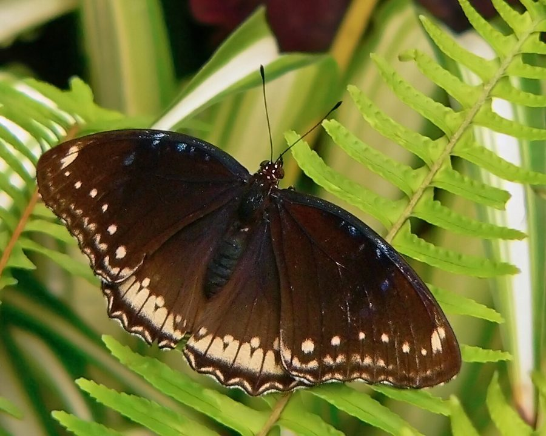

नील-चाँद तितलीGreat Eggfly
Hypolimnas bolina · Nymphalidae · INS-0021

- Scientific name
- Hypolimnas bolina (Linnaeus, 1758)
- Family
- Nymphalidae
- Hindi
- नील-चाँद तितली
- Status here
- native
- IUCN
- not evaluated
When to look कब देखें
Present all year.
नील-चाँद तितली / Great Eggfly
Hypolimnas bolina (Linnaeus, 1758) — Nymphalidae
नील-चाँद तितली (ग्रेट एगफ़्लाई) — पूर्वी उत्तर प्रदेश के ग्रामीण इलाकों, बगीचों और छायादार रास्तों पर पाई जाने वाली एक बड़ी और अत्यंत सुंदर निवासी तितली है। इस प्रजाति में नर और मादा तितली बिल्कुल अलग दिखते हैं (sexual dimorphism)। नर तितली का शरीर मखमली काले (velvety black) रंग का होता है, जिसके पंखों के ऊपर चार बड़े सफ़ेद धब्बे होते हैं जो सूरज की रोशनी में चमकीले नीले रंग (iridescent blue halo) में चमकते हैं, मानो पंखों पर नीले चाँद खिले हों। इसके विपरीत, मादा तितली भूरे रंग की होती है, जिसके पंखों के किनारों पर सफ़ेद और नीले धब्बे होते हैं। यह विषैली "काली तितली" (Common Crow) की नकल (mimicry) करती है ताकि पक्षी इसे न खाएं। इसके कैटरपिलर जंगली जड़ी-बूटियों पर पलते हैं।
Quick Identification त्वरित पहचान
| Feature | Description |
|---|---|
| Size | Large butterfly; wingspan 70–95 mm |
| Male Upperside | Velvety jet-black with a large oval white spot surrounded by a glowing blue halo on each wing |
| Female Upperside | Dark brown or blackish-brown; lacks the large blue-halo spots; mimics the toxic Common Crow butterfly |
| Underside | Both sexes are dull brown with a broad white band across the wings and small white spots |
| Behaviour | Territorially aggressive; perches on leaves and chases away other butterflies |
Field tip: Look in shady corners of gardens or near damp ground. The male is easily identified by the four large, glowing blue-and-white egg-like spots on its black wings. The female is brown with white margin spots, mimicking the slow-flying Common Crow.
Morphology आकारिकी
Biometrics (typical measurements for adult specimens in the Gangetic plains):
| Measurement | Range |
|---|---|
| Forewing length | 32–45 mm |
| Wingspan | 70–95 mm |
Sexual Dimorphism:
- Male: The upperside of the wings is deep velvety black. The forewings have two large, egg-shaped white spots surrounded by an iridescent violet-blue halo. The hindwings have one very large, round white spot, also with a brilliant blue halo.
- Female: Highly variable, but generally mimics the unpalatable Common Crow (Euploea core). The upperside is dark brown, without the large blue-halo spots. The margins of the wings are marked with series of white spots and a bluish sheen on the forewing apex.
Behaviour & Ecology व्यवहार और पारिस्थितिकी
Territorial sentinel and mimic.
- Territoriality: Males are highly territorial. They select a prominent perch on a leaf or twig about 1–2 meters high and guard it aggressively, flying out to chase away any other butterflies, dragonflies, or even birds that enter their territory, before returning to the exact same perch.
- Batesian mimicry: The female exhibits classic Batesian mimicry. By closely copying the wing pattern and slow, fluttering flight of the toxic Common Crow butterfly, she tricks visual predators (like birds and lizards) into avoiding her, despite being completely non-toxic and edible.
Ecological Role पारिस्थितिक भूमिका
Pollinator and evolutionary link.
- Pollination: Feed on nectar from a variety of wild and cultivated flowers, assisting in plant reproduction.
- Predator-prey balance: Adults are preyed upon by lizards, mantises, and birds. Their caterpillars consume weed foliage, controlling weedy growth.
Life Cycle / Phenology जीवन चक्र
- Breeding: Breeds throughout the warm humid months, peaking during the monsoon (July–October).
- Egg laying: The female lays tiny, ribbed, green eggs in small clusters on the underside of the host plant leaves. Eggs hatch in 3–4 days.
- Larval development: Caterpillars feed on the host leaves, growing through 5 instars in 15–18 days.
- Pupation: The mature caterpillar forms a pupa (chrysalis) suspended vertically from a twig. The pupa is dark brown with sharp spines, mimicking a dry leaf. The adult butterfly emerges in 7–10 days.
Larval (Caterpillar) Stage
- Caterpillar appearance: The mature caterpillar is 45–50 mm long, cylindrical, and dark brown to velvety black. The head is orange-yellow with two long, branched black spines (horns). The entire body is covered with multiple rows of branched, hard, yellowish-orange spines (scoli).
- Host plants: Feeds on various plants of the families Acanthaceae, Portulacaceae, and Urticaceae, primarily the common garden weed Luni (Portulaca oleracea) and the wild herb Hygrophila auriculata.
- Pupation site: Suspends itself head-down under twigs or leaf stalks. The pupa is cryptically colored to match rotting wood.
Host Plants or Prey आहार
Larval host plants:
- Weeds/Herbs: Luni (Portulaca oleracea), Ruellia tuberosa, and Hygrophila auriculata.
Adult food:
- Nectar from Lantana [FLR-0007 Lantana Camara], Marigold, and various wildflowers. They also feed on ripe fallen fruits and damp soil minerals.
Predators / Natural Enemies शत्रु
- Birds: Shrikes (like [BRD-0037 Long-tailed Shrike]) and bulbuls prey on adults.
- Reptiles: Garden lizards [REP-0001 Oriental Garden Lizard] capture them from perches.
- Arachnids: Giant wood spiders [SPD-0002 Giant Wood Spider] and jumping spiders.
- Parasitoids: Wasps (Trichogramma) target the eggs, and flies (Tachinidae) parasitize the caterpillars.
Agricultural / Human Relevance कृषि प्रासंगिकता
Pollinator and classroom example.
- Outreach value: Serves as one of the best examples of Batesian mimicry and sexual dimorphism in Basti schools, easily observable in any backyard.
- Weed suppression: The caterpillars feed heavily on Portulaca and other garden weeds, helping control weed growth in vegetable beds.
Expected Locally स्थानीय रूप से अपेक्षित
Not a field record. Written from published accounts for eastern Uttar Pradesh. No confirmed local sighting yet — if you have seen it, that is what the atlas needs.
अभी तक स्थानीय पुष्टि नहीं। यह विवरण प्रकाशित स्रोतों से है, किसी अवलोकन से नहीं।
Commonly observed in Basti Sadar, Harraiya, and Babhnan blocks. Males can be seen day after day guarding the same territory under mango groves or backyard lemon trees. During sunny afternoons after a monsoon shower, they are often seen drinking water from damp clay tiles.
Distribution वितरण
Global range: Widespread across the Indo-Australian region, covering India, Sri Lanka, China, Southeast Asia, Australia, and the Pacific Islands.
In India: Found throughout the plains and lower hills, very common in wet zones.
In Uttar Pradesh: A common resident in all districts, particularly abundant in areas with high vegetation cover.
In Basti district / eastern UP: Found in all home gardens, mango orchards, and margins of agricultural fields.
Research Questions शोध प्रश्न
Anyone can investigate these | कोई भी इन प्रश्नों की जाँच कर सकता है
- How long does a male Great Eggfly guard a single territory before abandoning it? — Map a territory and record the presence of marked males over several days.
- What is the attack rate of local birds on female Great Eggflies compared to the toxic Common Crow models? — Place plastic models in the field and record beak marks.
- What is the preference of Eggfly caterpillars for Portulaca oleracea compared to other Acanthaceae weeds? — Conduct choice tests in containers.
- How do male eggflies adapt their perch height in response to changing shade levels during the day? / दिन के समय छांव के बदलते स्तर के अनुसार नर तितली अपने बैठने की ऊंचाई को कैसे अनुकूलित करते हैं? — Measure perch heights every hour.
- Does the survival rate of Eggfly eggs increase when laid in small groups compared to single eggs? / क्या समूह में दिए गए अंडों के जीवित रहने की दर अकेले दिए गए अंडों की तुलना में अधिक होती है? — Monitor egg survival on host plants.
Similar Species मिलती-जुलती प्रजातियाँ
| Species | Key Difference | हिंदी |
|---|---|---|
| Hypolimnas misippus (Danaid Eggfly) | Male is similar but smaller; female mimics the toxic Plain Tiger (Danaus chrysippus) with orange wings and black margins | हुक्मी तितली — मादा प्लेन टाइगर की नकल करती है |
| Euploea core (Common Crow) | Wings are uniform dark brown with double row of white margin spots; lacks the blue-halo spots; flight is slow and lazy | काली तितली — सुस्त उड़ान, बिना नीले घेरे के धब्बे |
| Junonia orithya (Blue Pansy) | Smaller; male has bright blue hindwings with small orange eyespots; rapid low flight | नीली तितली — छोटी, नीले पंखों पर नारंगी आँखें |
Field rule: Large size, male has velvety black wings with four glowing blue-and-white egg-like spots, female is dark brown mimicking the Common Crow, and territorial perching behavior identify the Great Eggfly.
Taxonomy & Classification वर्गीकरण
Original description. Carl Linnaeus described the Great Eggfly as Papilio bolina in 1758 in the 10th edition of his Systema Naturae (Vol. 1, p. 479). The type locality was India. The genus name Hypolimnas combines the Greek hypo (under) and Limnas (a nymph of lakes/wetlands), referring to its preferred damp, shady habitats. The specific name bolina is of unknown origin, possibly named after a mythological character.
Subspecies. Globally, many subspecies are described. The subspecies present in northern India is:
| Subspecies | Authority | Range | Notes |
|---|---|---|---|
| H. b. jacintha | (Drury, 1773) | India, Nepal, Myanmar | UP subspecies; female mimics Euploea core |
Family and order placement. Placed in the order Lepidoptera, family Nymphalidae (brush-footed butterflies).
Phylogenetic notes. Hypolimnas bolina is a highly variable species with strong genetic polymorphism linked to female coloration, which is maintained by natural selection driven by predator avoidance.
IUCN status rationale. Not evaluated (NE) by the IUCN. It is a highly abundant, adaptable species with no major threats of extinction across its global range.
Photo Gallery फोटो गैलरी
References संदर्भ
- Linnaeus, C. (1758). Systema Naturae per regna tria naturae. Editio Decima, Reformata. Laurentii Salvii, Holmiae, p. 479. [original description]
- Kunte, K. (2000). Butterflies of Peninsular India. Universities Press, Hyderabad.
- Kehimkar, I. (2008). The Book of Indian Butterflies. Bombay Natural History Society, Mumbai.
- Clarke, C. & Sheppard, P. M. (1975). The genetics of the mimetic butterfly Hypolimnas bolina (L.). Philosophical Transactions of the Royal Society of London. Series B, 272, 229-265.
- Bingham, C. T. (1905). The Fauna of British India, Including Ceylon and Burma. Butterflies. Vol. 1. Taylor and Francis, London.
- GBIF Occurrence Data — Hypolimnas bolina, Uttar Pradesh (2010–2025).
Source file: species/fauna/insects/great_eggfly.md